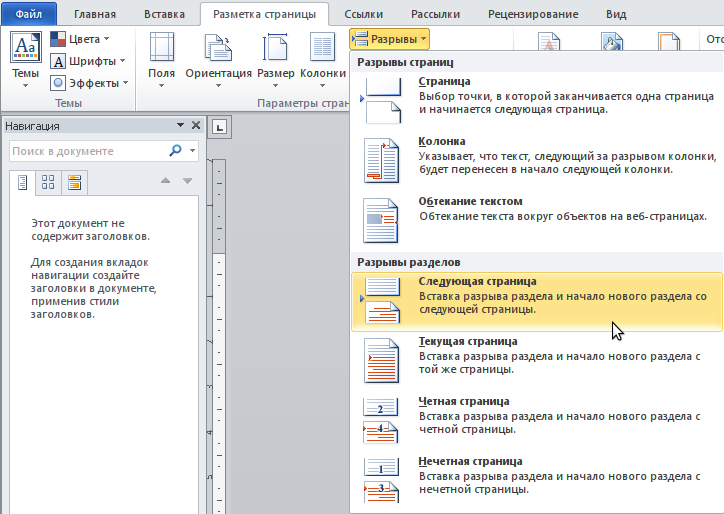
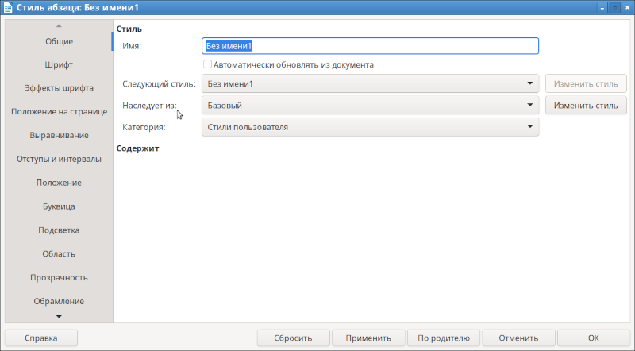
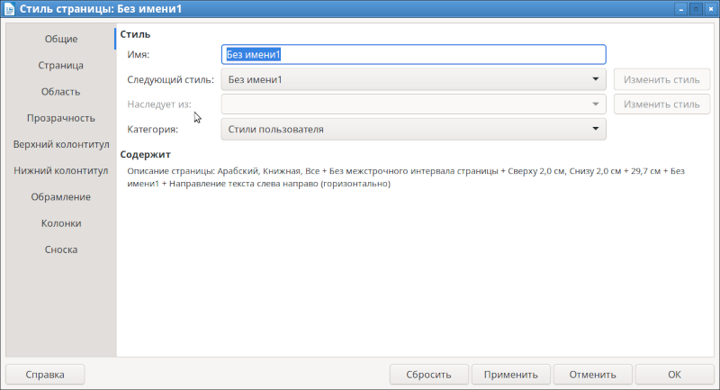
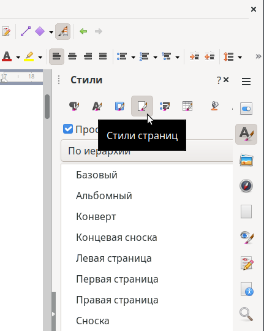
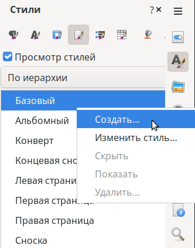
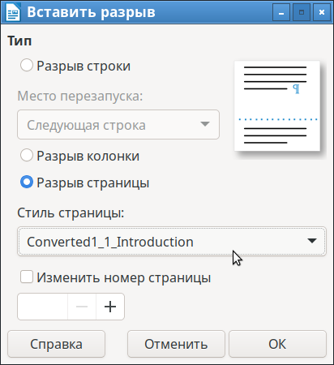
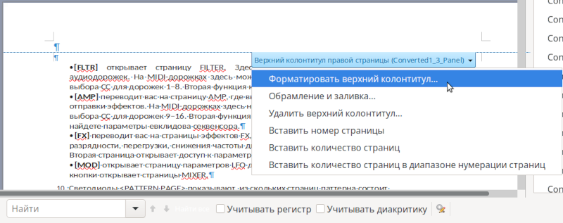
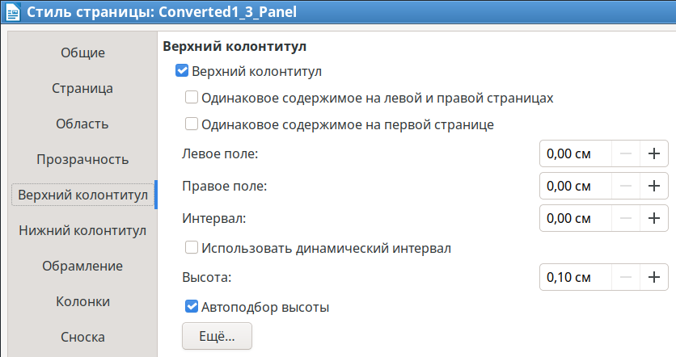

Часто структура документа такова, что он состоит из разделов, причем в каждом разделе верхний или нижний колонтитул отличается: в нем написано название текущего раздела. Как сделать такой документ в Libre Office?
К сожалению, даже к версии Libre Office 25.8 в Writer так и не появилось инструмента быстрого создания раздела. В MSOffice уже много лет существует вставка разрыва с созданием нового раздела одним действием в меню:

Но не таков Writer! Чтобы создать новый раздел, нужно разбираться со стилями документа и сплясать гопака в многочисленных формах ввода.
Далее рассказывается, какие действия надо совершить, чтобы создать в Writer новый раздел.
* * *
Как создать новый раздел
Итак, основаная идея в том, что новый раздел во Writer - это, по сути, новый стиль страницы. Логично было бы предположить, что оформление и верстка нового раздела будет практически полностью совпадать с предыдущим разделом, отличаясь небольшими различиями, например, содержимым колонтитулов. Поэтому, логично было было бы взять существующий стиль страницы, скопировать его или создать новый стиль с указанием базового стиля страницы уже существующего раздела.
К сожалению, ни того, ни другого во Writer не реализовано. Копирования стилей нет как понятия. А создание нового стиля страницы невозможно с указанием базового стиля. Для начертания абзаца базовый стиль можно указывать, а для страниц - нельзя. Ниже даны примеры окон (надо обратить внимание на пункт "Наследует из"):

Создание нового стиля абзаца

Создание нового стиля страницы
Видно разницу? Это говорит о том, что стиль страницы невозможно наследовать. А значит, для создания нового раздела, стиль страницы надо создавать с нуля.
То есть, для создания раздела в документе, надо в начале вручную создать новый стиль страницы, и потом вручную проверить, и при необходимости отредактировать параметры стиля так, чтобы эти параметры были такие же, как у стиля страницы предыдущего раздела (или основного документа). И уже после этого создавать раздел. Вот так удобно сделали свой продукт программисы Libre Office.
Управление стилями страниц находится на четвертой вкладке окна управления стилями:

Для создания нового стиля страниц надо выбрать любой стиль страницы, и выбрать пункт "Создать":

Откроется уже знакомое окно с заблокированным пунктом "Наследует из". В этом окне надо пробежаться по всем горизонтальным вкладкам (обычно это Страница, Верхний колонтитул, Нижный колонтитул), и выставить параметры такие же, как и у страницы, которая использовалась в предыдущем разделе. Обычно, с первого раза это не получится, поэтому далее созданный стиль страницы можно редактировать через пункт контекстного меню "Изменить стиль".
Далее надо поместить курсор на то место, после которого на следующей странице должен появиться новый раздел.
После того, как стиль страницы создан и курсор установлен, можно создавать развыв, после которого появится новый раздел. Естественное желание - это нажать в главном меню:
Вставка -> Раздел...
... в надежде, что будет показан диалог создания нового раздела с заданным стилем страницы. Но нет, на самом деле надо выбирать:
Вставка -> Еще разрывы -> Разрыв...
В результате будет показано окно, в котором надо выбрать только что созданный стиль страницы:

Кстати, в этом же окне можно установить начальный номер страницы раздела, если надо изменить нумерацию страниц. Причем делается это один раз в момент создания разрыва для нового раздела. Где можно изменить номер начальной страницы после создания раздела - не удалось разобраться.
Хинт: А как узнать стиль текущей страницы? Все очень просто: если в инструменте стилей открыта вкладка "Стили страниц", то в момент перемещения курсора на страницу, будет автоматически выбран стиль текущей страницы.
Как настроить колонтитулы
Теперь про колонтитулы. Управлять отступами колонтитулов можно в окне изменения стиля в вертикальных вкладках "Верхний колонтитул" и "Нижний колонтитул". А так же эти вкладки вызываются из контекстного меню самого колонтитула, пункт "Форматировать верхний/нижний колонтитул":

Содержимое колонтитула будет распространяться на все страницы раздела (на страницы, которые имеют такой же стиль страницы). Однако надо учитывать, что в разделе могут быть разные колонтитулы:
Под правой и левой страницей, по-сути, понимается четная и нечетная страница. Управление повтором колонтитулов на последующих страницах после первой страницы в разделе, осуществляется следующими галкам:
Эти галки находятся в окне настроек стиля страницы на вертикальных вкладках Верхний колонтитул или Нижний колонтитул. Визуально они выглядят так:

Периодически Libre Office начинает работать некорректно с этими галками. Несмотря на то, что в стиле страницы обе галки сняты, Writer может вдруг начать изменять колонтитулы на вторых и последующих страницах раздела при изменении колонтитула на первой странице. Причем начинает это делать внезапно, хотя до этого момента колонтитулы редактировались правильно. В этом случае следует сохранить документ, выключить Libre Office и запустить его заново с этим же документом. Правильная работа с колонтитулами восстановится, но, скорее всего, на время.
Вообще, вся работа с колонтитулами в Libre Office достаточно глючная. Если после выполнения каких-то действий колонтитул не изменился, или изменение не распространилось на другие страницы, или размер и отступы колонтитула вдруг стали другими, хотя их никто не трогал. то надо сохраниться и открыть документ заново. Зачастую это помогает, хотя сильно тратит время пользователя: невозможно понять, правильно ли выполняются действия, неправильно ли работает пользователь или проблема в самой программе.
Нужно даже быть готовым к тому, что в какой-то момент все колонтитулы по какой-то причине будут испорчены появлением странных символов табуляций, которых никто не добавлял. Фееричные глюки будут присутствовать постоянно. А так же много глюков будет при работе с колонтитулами и отмене действий (Ctrl+Z). Это отдельный глюкодром, то есть права на ошибку, при редактировании колонтитулов, у пользователя нет. Как и много лет назад, единственным путем редактирования документа "с откатом" изменений является периодическое сохранение файла с новым именем (например, с инкрементальным номером в названии файла).
Странности стилей страниц
Стиль страницы, так же как и обычный стиль, можно назначать на любые страницы, даже которые идут не друг за другом. Для того, чтобы назначить стиль страницы на заданную страницу, надо поместить курсор в любое место страницы, и дважды кликнуть мышкой на нужный стиль страницы.
К чему это может привести? Так как стиль страницы, по сути, обозначает раздел, то в документе запросто можно сделать Раздел 1, после которого будет Раздел 2, а далее будут опять идти страницы Раздела 1. Структура безумная, но Libre Office никак эту проблему не контролирует. Как бороться с этой проблемой? Просто надо быть внимательным и не допускать таких структур документов.